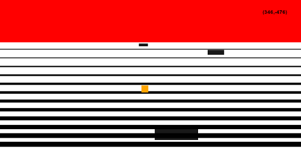

Lately I've been working on a prototype in HTML5 Canvas that isn't going anywhere. I've decided to call it and move on to something else. But, this is a good opportunity to review the experience.
From the beginning, this felt like a good project to try with CoffeeScript. In my past prototypes, good class hierarchies have been especially important and while that may sound silly to point out, it's worth mentioning when talking about JavaScript. Normally I use a solution pulled from "JavaScript: The Good Parts" that works really well, but it comes with boilerplate I always have to look up. CS's implementation was appealing, as was its list processing techniques.
Within 10 or 15 minutes of browsing http://coffeescript.org, my Canvas was up and drawing from CoffeeScript. I tried to follow CS conventions as I understood them, for example using as little puncutation as possible and instead relying on proper whitespace to define things. As expected, that ended up giving me trouble, as it was hard to tell how things should be tabbed. Next time, I'll probably add back as much punctuation as CS will let me.
The project started out as a running game. I wanted to try to replicate running as best as I could in 2D. I wanted something like Space Harrier or the special stages in Sonic 3. Without much other planning, I started drawing horizontal lines on the screen until I started getting the feeling I was looking for. Adding in objects that were anchored to the ground and grew as you moved towards them came after that. Collision detection was next, which was interesting because I wasn't used to the plane of collision.
The perspective trick isn't quite right, but with some more honing I think it could be. Even if the trick didn't quite work, it looks pretty cool and has a decent feel to it.
The "chase" part of the prototype never made it in. But, that idea is still formulating in my brain. I expect it'll show up again in a future project.
Code: https://github.com/doowttam/The-Chase
Play It: http://doowttam.github.com/The-Chase